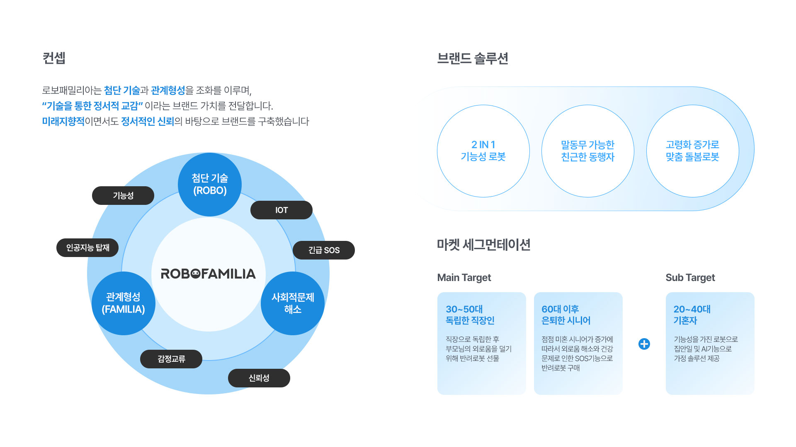
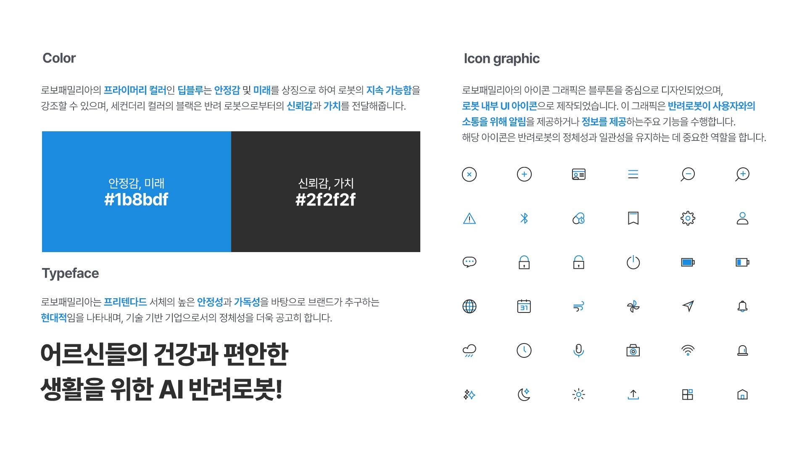
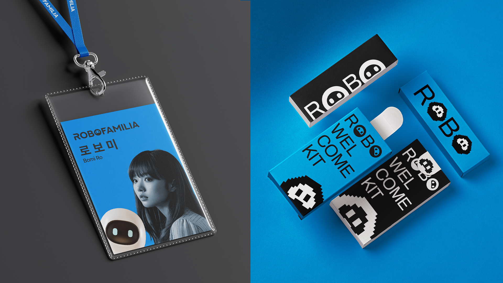
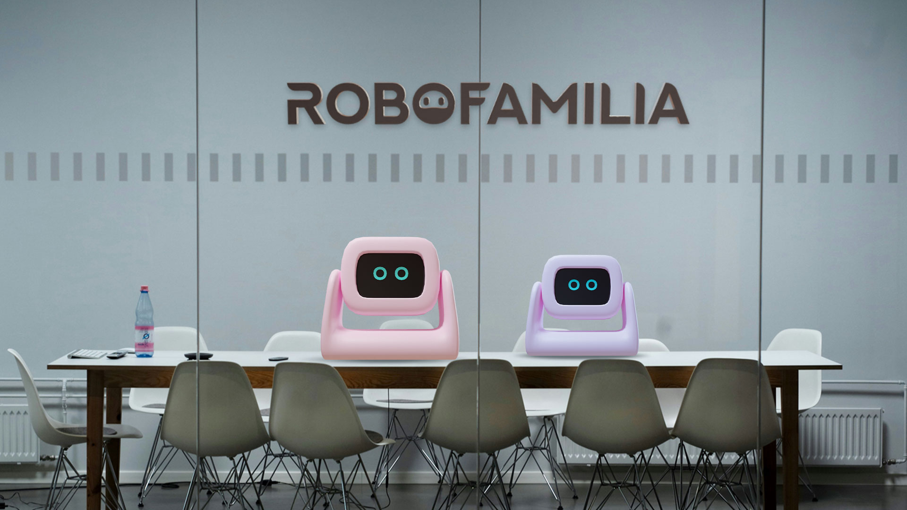
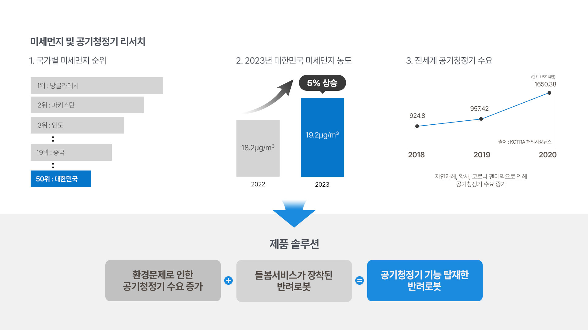
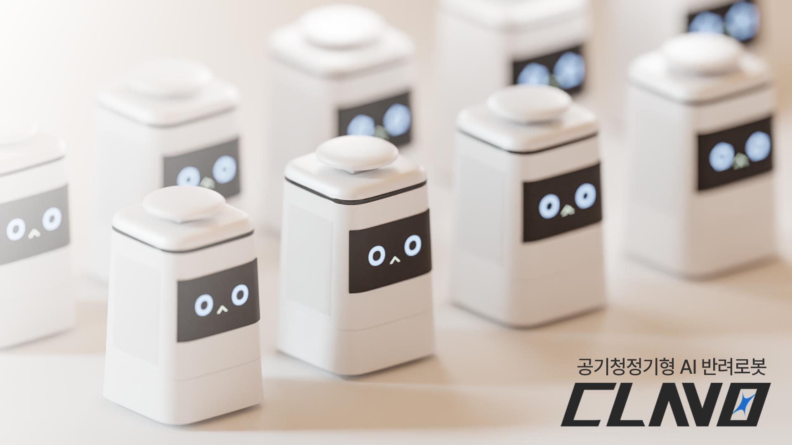
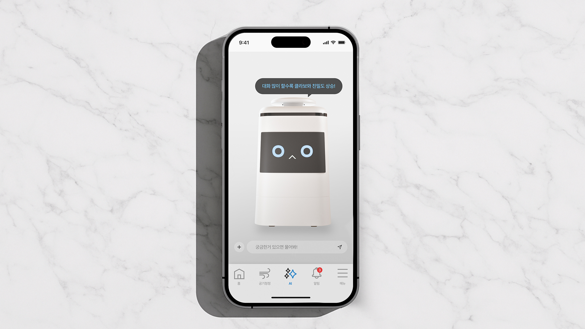

기능성 반려로봇 브랜드 로보패밀리아
이 프로젝트는 고령화와 환경적 문제라는 대한민국의 시급한 두 가지 사회적 문제를 해결하기 위해 기획한 AI 반려로봇 브랜딩입니다.
저는 기획 단계에서 2030년까지 급성장할 반려 로봇 시장의 데이터와 고독사, 보이스피싱' 등 시니어들의 Pain Point를 심층 분석했습니다.
이를 바탕으로 단순한 가전이 아닌, 부모님의 안전을 지키는 '또 하나의 가족'이라는 컨셉을 도출했습니다.
디자인적으로는 시니어 사용자들을 배려하여 직관적인 시인성을 최우선으로 했습니다.
신뢰감을 주는 딥블루 컬러를 사용하고, 긴급 상황에서는 즉각적으로 인지할 수 있는 UI 시스템을 설계했습니다.
또한, 제품의 3D 모델링부터 브랜드 영상까지 직접 제작하여, 기술력과 감성이 조화된 브랜드 경험을 완성도 있게 구현했습니다.
기여도
브랜드 기획 : 100% ㅣ 그래픽 디자인 : 100% ㅣ 3D 디자인 : 100% ㅣ AI프롬프트 : 100% ㅣ 모션그래픽 : 100%








